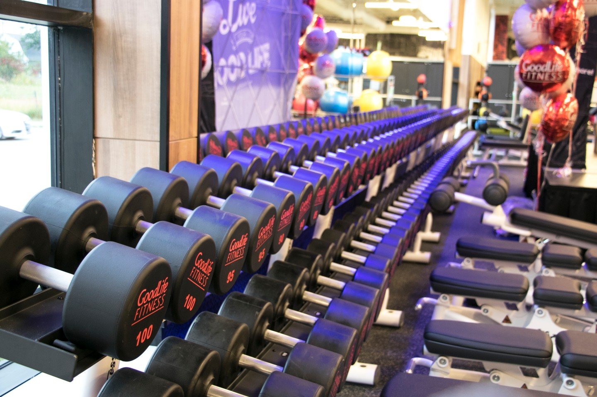

About Me
Hello! I am a second year student based in Ontario, Canada. I currently attend York University for my Bachelor's in Environmental Studies, driven by a deep commitment to shaping equitable and sustainable cities.
My academic journey is laying the groundwork for my ultimate goal: earning my Master's degree and transitioning into a career with the City of Toronto in the urban planning sector. I believe that urban planning is about much more than zoning and infrastructure, it’s about designing spaces that actively care for the people who live in them. I am deeply passionate about community development and tackling the housing crisis head-on. My core mission is to help design and build well-integrated shelters that bring down the homeless population by placing at-risk individuals into safe, supportive environments. I want to use urban planning as a powerful tool for social change, creating a city where everyone has a secure foundation to rebuild their lives and thrive
Interests & Hobbies
- Fitness & Sports: I enjoy staying highly active and pushing my limits through powerlifting and boxing. I make time for a workout every day, which helps me keep my physical health strong, but more importantly, my mental health. My favourite workouts to hit are chest and back days.
- Automotive & Audio: I am a Lexus IS enthusiast mainly because I own one. This was a big milestone for me as I worked for it and bought the car myself. I also have a deep interest in custom car audio systems, including amplifiers and subwoofers. I installed a 12 inch subwoofer in my Lexus. I did the wiring all on my own, adding to the satisfaction and achievement. I also like to learn about cars in my free time and modify my Lexus IS as a hobby. It is quite an expensive hobby, sadly.
- Music: Big fan of Punjabi music and comparing high quality headphones for the best bass and sound quality.
- Art & Design: Interested in creative tattoo designs, particularly themes involving nature and compasses.
Projects & Coursework
My academic portfolio is deliberately diverse, blending environmental science, data analysis, and human health to build a comprehensive foundation for a future career in urban planning.
- Environmental & Urban Ecology: My core coursework focuses on the intersection of human development and sustainable ecology. I am learning to critically assess environmental impacts, a crucial skill for designing future urban housing, shelters, and community spaces.
- Data & Technical Analysis: Through my coursework in Statistics and Python programming, I am developing the quantitative skills necessary to analyze demographic data, housing trends, and urban infrastructure needs. This technical background ensures my future planning decisions will be grounded in solid, actionable data.
- Holistic Community Health & Culture: To truly understand the communities I aim to serve, I have broadened my studies to include Kinesiology and Film Studies. Studying physical health, human mechanics, and societal narratives gives me a unique perspective on how the physical spaces we build directly impact human wellness and cultural connection.
Gallery

The Lexus IS

In the Gym
Future in Urban Planning